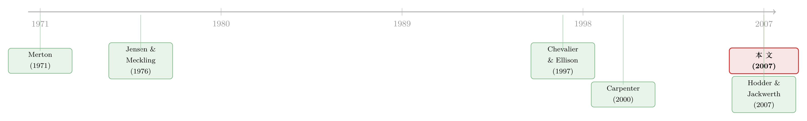

「赌一把」未必是加杠杆：当落后的基金经理反手减仓
本文读的是 Basak, Pavlova & Shapiro (2007, Review of Financial Studies)：当基金资金流对相对业绩呈「增且凸」的关系时，落后于基准的经理会在一个有限区间内「赌博」以图反超；但这场赌博既可能是加大组合波动，也可能是减小波动——方向取决于经理的风险容忍度。换句话说，一个足够厌恶风险的经理在落后时，会顶着正的风险溢价减持风险资产。模型给出了完全解析的最优持仓，实证也在美国共同基金日度数据里找到了支持。
1 引言：一个被讲烂了、却讲反了的故事
「基金管理这门生意，真正的本事不是管钱，而是把钱拉进来管。」（The real business of money management is not managing money, it is getting money to manage.）这句被反复引用的华尔街名言，几乎就是这篇论文的全部张力所在。
故事的上半段，大家都很熟。Chevalier and Ellison (1997)、Sirri and Tufano (1998) 这一批实证文献早就告诉我们：钱会追着业绩跑，而且这种「资金流—业绩」关系是凸的——跑赢基准，新钱蜂拥而入；跑输，赎回却没那么凶。经理的薪酬又通常与在管资产规模挂钩。于是一个再自然不过的推论是：这种凸性给了经理一个赌博的冲动——在快到年底、又落后于基准时，把组合的波动率往上拉，赌一个咸鱼翻身。这就是 Jensen and Meckling (1976) 以来「风险转移 (risk shifting)」的经典叙事，写进了每一本公司金融教科书。
故事讲到这里，似乎已经收尾了：落后 → 加杠杆 → 赌一把。多么顺理成章。
但本文三位作者（Basak、Pavlova、Shapiro，下称 BPS）偏偏要在这个「人人都会讲」的地方停下来，问一句别扭的话：「赌一把」就一定等于「加大波动」吗？
接着，一个自然的问题是：经理本人也是风险厌恶的（CRRA 偏好）。一个风险厌恶的人，怎么会在任何区间里无限度地加杠杆？然后，真正关键的一步在于：在相对业绩的语境下，「冒险」的参照系不是「波动率为零」，而是基准组合本身。任何偏离基准的策略，本身就是有风险的。于是反转出现了——一个足够厌恶风险的经理，要想在「基准下跌」的世界里反超，最优做法恰恰是比基准持有更少的系统性风险，也就是降低自己组合的波动率。
这就是这篇论文的「一个核心」：风险转移有方向，而方向由风险容忍度决定。加波动只是其中一半的故事；另一半，是落后的经理顶着正的风险溢价反手减仓。本文从头到尾，都在把这一个反直觉的结论讲透。
2 经济设定：把「资金流」写进效用，而不是预算
BPS 用了最干净的舞台——Black and Scholes (1973) 经济：连续时间、有限期 [0,T]，单一布朗运动 w 驱动全部不确定性。一只无风险货币市场账户，利率为常数 r；一只风险股票，价格服从几何布朗运动：
$$dS_t = \mu S_t\, dt + \sigma S_t\, dw_t,$$
均值 μ、波动 σ 均为常数。
经理动态配置基金资产，初值 W_0，把比例 θ_t（即风险暴露 (risk exposure)）投在股票上，其余放货币市场。组合价值服从
$$dW_t = \big[(1-\theta_t)r + \theta_t \mu\big]W_t\, dt + \theta_t \sigma W_t\, dw_t.$$
这里 θ_t 就是经理唯一的控制变量。基准 Y 是一个把比例 β 放在股票、(1-β) 放在货币市场的市值加权组合：
$$dY_t = \big[(1-\beta)r + \beta\mu\big]Y_t\, dt + \beta\sigma Y_t\, dw_t.$$
记组合与基准在 [0,t] 上的连续复利收益为 R^W_t = ln(W_t/W_0) 与 R^Y_t = ln(Y_t/Y_0)，并不失一般性地令 Y_0 = W_0。
真正巧妙的一步，是资金流怎么进入经理的目标函数。 到期时基金以速率 f_T 收到资金流，它是一个「领口 (collar)」型的分段函数：
$$ f_T= \begin{cases} f_L, & R^W_T - R^Y_T < \eta_L,\\[2pt] f_L + \psi\,(R^W_T - R^Y_T - \eta_L), & \eta_L \le R^W_T - R^Y_T < \eta_H,\\[2pt] f_H \equiv f_L + \psi\,(\eta_H - \eta_L), & R^W_T - R^Y_T \ge \eta_H, \end{cases} $$
其中 f_L, ψ > 0，η_L ≤ η_H。这个形状直接照搬自 Chevalier-Ellison 的图 1：在大幅落后区间是平的；当相对业绩升到约 η_L = −8%，出现一个凸的「拐点 (kink)」，随后是一段近似线性的上升；到约 η_H = 8% 又重新走平。f_T 以「占组合的比例」来理解：f_T > 1 是净流入，f_T < 1 是净流出。
经理是 CRRA 偏好，定义在到期在管资产总额上：
$$u(W_T f_T) = \frac{(W_T f_T)^{1-\gamma}}{1-\gamma},\qquad \gamma > 0.$$
注意：f_T 是乘进效用里的，而不是进预算约束——因为未来（时点 T）的资金流是不可交易的。这一点看似技术细节，却是整篇论文非凸性的来源。把它和经理的问题摆在一起，最核心的方程就是：
为什么 f_T 不可交易这么要命？因为如果它能交易，经理就能把这块「凸性」对冲掉，问题重新变成标准的凹优化。正因为它只能通过 W_T 间接影响，经理被迫在一段终端财富区间上「爱上风险」，非凸性才会真实地改变最优策略。
3 模型核心：风险转移的「驼峰」与它的方向
先看没有隐性激励时的基准答案。若 f_T ≡ 1，经理退化成 Merton (1971) 的标准动态投资者，最优风险暴露是一个常数，与相对业绩无关：
$$\theta^N_t = \frac{1}{\gamma}\,\frac{\mu - r}{\sigma^2}.$$
本文把它称为正常风险暴露 (normal risk exposure) θ^N。类比地，基准的风险暴露是 θ^Y_t = β。
这里要划重点：BPS 衡量「风险承担」的方式，和公司金融传统不一样。传统定义是「经理收益对波动率的敏感度」（即对 θ 求偏导、看它是否为正）；而 BPS 用的是投资组合文献里的最优风险暴露——把那个偏导令为零、解出每个相对业绩水平下的最优 θ。一个是「想不想加风险」，一个是「最终持了多少风险」。两套尺子，得出的结论几乎相反，这正是本文和 Chevalier-Ellison、Murphy (1999) 等文献「打架」的根源。
现在加入资金流。问题（4）的非凸性来自 f_T 在下阈值 η_L 处的那个凸拐点：它使得目标函数在某段终端财富 W_T 上低于其「凹化 (concavified)」版本，经理在这段区间里风险偏好 (risk loving)。本文把这段区间称为风险转移区间 (risk-shifting range)，并证明它是有限的——经理既不会在远远落后时赌，也不会在遥遥领先时赌。
在完全市场的 BS 经济里，驱动一切的状态变量是状态价格密度 (state price density) ξ：
$$d\xi_t = -r\xi_t\, dt - \kappa\,\xi_t\, dw_t,\qquad \kappa \equiv \frac{\mu - r}{\sigma},$$
κ 是经济中恒定的风险市场价格。Proposition 1 用 ξ 给出了最优风险暴露 θ̂_t 与终端财富 Ŵ_T 的完全解析解（表达式较长，涉及标准正态 N(·)、φ(·) 与一组阈值 ξ̂, ξ_a, ξ_b，此处不照抄）。真正要带走的，是它揭示的两种经济：
- 经济 (a)：
θ^N > θ^Y——经理的正常风险暴露高于基准。落后时，她在风险转移区间里把θ̂顶出一个向上的驼峰：增加组合波动率。这就是教科书里那个「赌一把就是加杠杆」的故事。 - 经济 (b)：
θ^N < θ^Y——经理的正常风险暴露低于基准。落后时，驼峰朝下：她降低组合波动率。
为什么会朝下？把作者那段话翻译过来：在相对业绩评价下，任何偏离基准的策略本身就有风险。比基准多担系统性风险（拉高波动），是在赌「基准上涨时我能领先」；比基准少担系统性风险（压低波动），则是在赌「基准下跌时我能反超」。一个相对厌恶风险的经理（θ^N < θ^Y），自然选择后者——于是出现了那个反直觉的结论：她在落后时减持风险资产，哪怕股票的风险溢价是正的。
而且这个驼峰的位置也和传统看法相左。Chevalier-Ellison、Murphy (1999) 认为风险承担在凸拐点或不连续点附近最强烈；BPS 却发现，风险转移的最大值落在深深的落后区，最小值则因资金流形态而异。在某些设定里，风险承担甚至在不连续点附近被最小化。
用于画图的标定也值得记下：经济 (a) 取 γ=1.5, σ=0.16，经济 (b) 取 γ=2, σ=0.29，其余 μ=0.1, r=0.02, f_L=0.8, f_H=1.5, β=1.0, η_L=−0.08, η_H=0.08。在这组参数下，决定「上升线段无关紧要」的 Condition 1 对风险厌恶 γ ∈ (0, 1.56) 成立——也就是说，只要 γ 足够低，赌博冲动强到压过线性段带来的激励，整段上升的资金流形态对最优策略毫无影响，分析得以化为一个干净的「局部」问题。
别把这套机制和 Carpenter (2000) 混为一谈。Carpenter 研究的是期权式（凸）薪酬，落后的经理享有一张与基金价值无关的「安全网 (safety net)」，这张网抹掉了她的风险厌恶考量，结论是落后时波动率无界发散。BPS 的经理没有安全网——业绩一差就要承受赎回的惩罚——所以她在落后区的波动率 (i) 有一个内部极值，(ii) 可能下降。一字之差，结论天壤之别。
4 这场错配，投资者要付多少钱？
经理的最优策略，并不是替投资者最优的策略。BPS 把经理的政策与「单纯最大化投资者效用」的政策放在一起比，算出了主动管理的代理成本。结论是：它可能在经济意义上相当可观。
一个标志性的数字：若投资者的相对风险厌恶为 2、经理为 1，错配给投资者带来的成本接近其初始财富的 10%。当经理与投资者的风险态度差异很大、资金流—业绩关系陡峭、或基准本身波动很高时，成本尤其严重。
（关于基金在规模、费率与流动性之间的取舍如何反过来塑造业绩，可参见《基金的「不可能三角」：当规模、费率与流动性必须互相让步》。）
5 实证：符号对了，量级却小了
既然不是第一个研究美国基金风险承担的人，BPS 专挑模型新颖的预测来检验，用的是美国共同基金的日度收益。
- 假说一：落后的经理会加大组合对基准的偏离，即提高跟踪误差方差 (tracking error variance)。证据支持，且没有证据表明落后经理提高了组合自身的波动率——后者与 Busse (2001) 一致。这恰好印证了核心区分：经理动的是「相对基准的偏离」，不是「绝对波动」。
- 假说二：足够厌恶风险的经理，在跑输市场时会降低组合 beta。证据：上一年选了较低风险组合的经理，次年落后时确实下调 beta；当年 beta 低于
1的基金，落后市场时也下调 beta。符号与理论一致——但量级明显偏小，作者归因于实践中的风险管理约束（Almazan et al. (2004)）。 - 最后，落后多深才赌？基金在中度落后时增加风险，大幅落后时停止——正对应模型里那个「有限的风险转移区间」。
符号全对，量级偏小：这大概是这篇理论驱动论文最诚实、也最有说服力的实证画像。
6 文献脉络
这条线的起点有两根支柱。一根是 Merton (1971)：在没有任何外部激励时，CRRA 投资者的最优风险暴露是个常数 θ^N——这是全文的「零假设基准」。另一根是 Jensen and Meckling (1976)：股东（或经理）有动机通过加大波动来转移风险给债权人——这是「风险转移」叙事的母题。
接着，实证文献给这个母题注入了具体形状。Chevalier and Ellison (1997)、Sirri and Tufano (1998) 量出了凸的资金流—业绩关系，并由此推断经理有赌博冲动——但他们用的是「收益对波动率的敏感度」这把尺子。
然后，理论开始进入动态投资组合的框架。Carpenter (2000) 在和 BPS 类似的连续时间设定里研究期权式薪酬，得到「落后时波动率无界」的结论。
但真正关键的一步，是 BPS 把「不可交易的凸资金流」乘进 CRRA 效用，第一次在解析解里把风险转移的方向（加波动 vs. 减波动）和有限的风险转移区间同时刻画出来——并指出风险厌恶的经理可能顶着正溢价减仓。

于是反转之后还有延续。Hodder and Jackwerth (2007) 在 Carpenter 与本文的基础上，进一步把对冲基金薪酬里更现实的特征（沿 Goetzmann, Ingersoll, and Ross (2003) 的高水位线）纳入，并系统比较了两套模型下的风险承担。Chen and Pennacchi (2005) 同样论证相对业绩薪酬有时让经理降低波动，但他们的目标函数全局凹，排除了本文研究的那类风险转移。本文恰好坐在「非凸、解析、有方向」的那个独特位置上。
7 评论与延伸（Q&A + 研究方向）
(a) 几个可能的疑问
Q：「赌博却降低波动率」到底凭什么？这不是自相矛盾吗？
不矛盾，关键在参照系。在相对业绩评价下，「无风险」不是波动率为零，而是贴住基准。一个风险厌恶（
θ^N < θ^Y）的经理，正常情况下就比基准持得更保守；当她落后、又必须赌一个反超时，最划算的赌注是赌「基准下跌的那个世界」，于是进一步少持系统性风险。她的组合波动率因此下降，但相对基准的偏离（跟踪误差）上升——这才是真正被放大的「风险」。
Q：BPS 的「风险承担」和公司金融教科书里的定义差在哪？
教科书量的是「价值函数对波动率的偏导」（敏感度，想不想加风险）；BPS 量的是把偏导令零解出的最优
θ（最终持了多少风险）。前者只看冲动、隐含一个固定的现状配置；后者解出均衡持仓。两套尺子在凸拐点附近给出相反的预测，这正是本文与 Chevalier-Ellison、Murphy 分道扬镳之处。
Q：风险转移区间为什么是「有限」的，而不是像 Carpenter 那样无界？
因为 BPS 的经理始终是风险厌恶的、且业绩变差时要承受赎回惩罚，没有 Carpenter 那张抹平风险厌恶的「安全网」。落后太多，赢面太小，赌博的边际效用抵不过风险厌恶，她就收手；领先太多，没必要赌。于是只在中度落后的一段区间里赌——区间有限，区间内的风险暴露也有限。
Q：实证里「符号对、量级小」，是模型错了还是现实有约束？
作者倾向于后者：实践中的风险管理约束（Almazan et al. (2004) 记录的借款、卖空、衍生品限制）把经理能实现的风险偏移压扁了。模型是无约束基准，现实是带镣铐起舞——符号一致已经是对机制的有力支持，量级偏小恰恰指向「约束在咬人」。
Q：把基准 Y 解释成「同业群体」，结论还成立吗？
作者明说可以这么读，此时最优策略构成单个经理的最优反应 (best response)。但要走到纳什均衡，需要经理掌握其他人的偏好、持仓等全部信息，超出本文范围。所以本文的结论严格说是「给定基准外生」下的个体最优，而非锦标赛博弈的均衡解。
Q：这套机制对资产价格有外溢吗？
本文是局部均衡——价格
μ, σ, r外生。但若一大批经理都在「落后时偏离基准」，加总起来就会对系统性风险的需求产生时变的、状态依赖的扰动。把它嵌进一般均衡（如 Cuoco and Kaniel (2003)、Gomez and Zapatero (2003) 那条线），是自然的下一步。
(b) 几个可能的研究问题与提案
1. 把「方向性风险转移」搬到公司债与信用基金。 【经济故事】公司债基金同样面对凸的资金流—业绩关系，但它们的「风险」有两个维度：久期（利率 beta）和信用利差暴露。BPS 的逻辑预测，相对厌恶风险的信用基金经理在落后时未必加久期，反而可能压低信用 beta、贴住基准——一个未被检验的方向。【可行性】中。需要 Morningstar/CRSP 基金持仓 + TRACE 债券层面信用利差，按基金构造相对基准的信用 beta；识别上可用「上一年风险偏好」做经理类型的代理，沿用本文的分组思路。难点是信用 beta 比股票 beta 更难干净估计。
2. 风险管理约束是「咬」在哪个维度上？ 【经济故事】本文把「量级偏小」归因于风险管理约束，但没拆开是哪类约束（杠杆、卖空、衍生品）在起作用。若不同基金受不同约束，应能看到「被约束更松的基金，风险转移量级更接近无约束模型」。【可行性】高。Almazan et al. (2004) 已有基金投资限制的文本化数据，可与日度收益的跟踪误差响应做交互。这是一个相对干净的横截面异质性检验。
3. 外资持有人会放大还是抑制风险转移？ 【经济故事】不同投资者群体的资金流—业绩凸性不同；若外资份额高的基金，其资金流对相对业绩更敏感（或更钝），凸性强度随之变化，风险转移的「驼峰」高度应随外资份额系统性地移动。【可行性】中。需要基金层面的投资者构成（含跨境份额），数据可得性是瓶颈；识别可借助指数纳入等外生冲击改变投资者结构。与《外资真是「蝗虫」吗？》的视角天然衔接。
4. 季末「拉抬净值」与年末「风险转移」是同一台机器吗？ 【经济故事】文献里另有一支讲基金在季末粉饰业绩（portfolio pumping、window dressing）。BPS 的「有限风险转移区间」预测，这类行为应在中度落后最强、大幅落后消失——一个可与拉抬净值文献对照的可证伪含义。【可行性】高。日度持仓与收益已足够，可直接把「落后深度」作为连续变量，检验风险偏移是否呈本文预测的非单调形状。可与《拉抬净值：从明星基金经理转移到了他的同事身上》、《把「跑分」交给基金经理之前》对照。
8 我的判断
这篇论文最漂亮的地方，是它在一个人人以为已经讲完的问题上，用一个干净到近乎吝啬的模型，掀出了一个被忽略了三十年的反转：风险转移有方向，而方向藏在「经理的风险厌恶 vs. 基准的风险暴露」这个简单比较里。「落后就加杠杆」从一个全称命题，被降格成了两种经济中的一种。配上完全解析的 Proposition 1 和那个 10% 的福利成本数字，它兼具理论的优雅与政策的分量。
对识别，我有两点保留。其一，模型把基准 Y 当作外生、把价格当作外生，是严格的局部均衡；一旦一大批经理同向偏离，系统性风险的价格本身会动，本文的最优策略就只是「给定价格」的一阶近似。其二，实证的「符号对、量级小」虽被合理地归因于风险管理约束，但「跟踪误差方差上升」与「主动选股本身」在数据里很难彻底分开——落后的经理偏离基准，到底是赌博，还是单纯在下更大的主动头寸？这道识别上的缝，本文没有完全焊死。
后续我最想看到的，是把这套「方向性风险转移」放进信用市场检验：公司债基金的「波动」是久期和信用利差两条腿，BPS 的逻辑预测相对厌恶风险的信用经理在落后时会压低信用 beta 而非加杠杆——如果数据点头，那将是对这个反转最有力的一次域外复制。
参考文献
- Almazan, A., K. C. Brown, M. Carlson, and D. A. Chapman (2004). Why Constrain Your Mutual Fund Manager? Journal of Financial Economics 73, 289–321.
- Basak, S., A. Pavlova, and A. Shapiro (2007). Optimal Asset Allocation and Risk Shifting in Money Management. Review of Financial Studies 20(5), 1583–1621.
- Black, F., and M. Scholes (1973). The Pricing of Options and Corporate Liabilities. Journal of Political Economy 81, 637–654.
- Busse, J. A. (2001). Another Look at Mutual Fund Tournaments. Journal of Financial and Quantitative Analysis 36, 53–73.
- Carpenter, J. N. (2000). Does Option Compensation Increase Managerial Risk Appetite? Journal of Finance 55, 2311–2331.
- Chen, H.-L., and G. G. Pennacchi (2005). Does Prior Performance Affect a Mutual Fund's Choice of Risk? Theory and Further Empirical Evidence. Working Paper, University of Illinois at Chicago.
- Chevalier, J., and G. Ellison (1997). Risk Taking by Mutual Funds as a Response to Incentives. Journal of Political Economy 105, 1167–1200.
- Goetzmann, W. N., J. E. Ingersoll, and S. A. Ross (2003). High-Water Marks and Hedge Fund Management Contracts. Journal of Finance 58, 1685–1717.
- Hodder, J. E., and J. C. Jackwerth (2007). Incentive Contracts and Hedge Fund Management. Journal of Financial and Quantitative Analysis (forthcoming).
- Jensen, M. C., and W. Meckling (1976). Theory of the Firm: Managerial Behavior, Agency Costs and Ownership Structure. Journal of Financial Economics 3, 305–360.
- Merton, R. C. (1971). Optimum Consumption and Portfolio Rules in a Continuous-Time Model. Journal of Economic Theory 3, 373–413.
- Sirri, E. R., and P. Tufano (1998). Costly Search and Mutual Fund Flows. Journal of Finance 54, 359–375.